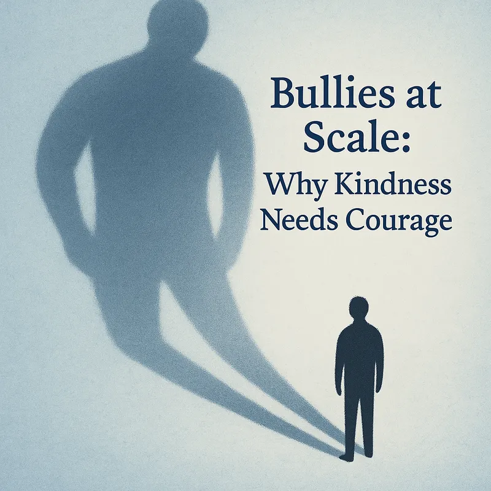

Essay · October 14, 2025
Bullies at Scale: Why Kindness Needs Courage
After writing about kindness and civility, I found myself thinking about their opposite — the way cruelty, when left unchecked, expands.

In schoolyards and states, in boardrooms and social media feeds, bullying has a fractal quality. What happens in miniature repeats itself at every scale. The stakes simply grow.
Fractals appear throughout nature — a broccoli floret mirrors the full head, a coastline seen from an airplane resembles one seen from the shore. The pattern is self-similar, repeating endlessly at larger and smaller magnitudes (I even wrote a novel about this: A World Between).
Human behavior works the same way. The impulses that drive small cruelties — the urge to dominate, to humiliate, to take pleasure in others’ discomfort — can, if unchallenged, scale into vast systems of harm.
The schoolyard bully demands your lunch money. The national bully demands your land, your rights, your freedom. Both depend on the same logic: others’ fear. Both thrive when bystanders rationalize or look away.
Parents try to teach children to handle bullies: walk away, fight back, tell an adult. Each choice carries risk, and none guarantees safety. But doing nothing guarantees aggression’s growth — and the reinforcement of cruelty.
We see this dynamic starkly in the larger world.
Russia’s invasion of Ukraine was a massive act of bullying at scale — a bet that the world would hesitate, equivocate, and ultimately accept aggression as a fact of life. Three years later, with authoritarian leaders emboldened elsewhere and online mobs amplifying cruelty, the lesson endures: meanness metastasizes when met with silence.
In 2022, the world debated jets and sanctions while Mariupol burned. Those early days of uncertainty revealed how human nature searches for reasons not to confront the bully. We tell ourselves it’s complicated, that we should wait, that someone else will step in.
But bullies count on that hesitation. Bullies succeed on all levels through hesitation, rationalization, fear, and fatigue.
Moral courage rarely announces itself in heroic form. It begins with an inner refusal to be complicit.
The small acts of kindness I wrote about earlier — holding a door, offering a hand — are not trivial. They are practice. Each teaches us to recognize the humanity of others, to resist the ease of indifference. And those same muscles, when strengthened, allow us to stand up to cruelty when it scales.
Gandhi said, “The difference between what we do and what we are capable of doing would suffice to solve most of the world’s problems.”
The longer one waits, the more it takes to stop bullying, stop war, end aggression. There’s only one way to deal with a bully at any scale, from the schoolyard to Putin: stand up, firmly, unequivocally, at every step. Don’t be cowed by threats, which too often succeed in freezing our most potent responses.
Kindness alone can’t stop a bully. But courage, backed by conscience, can.
Picture the flower in the tank cannon at Tiananmen Square — defiance expressed as decency.
The question is whether we’ll summon enough of both — not just for ourselves, but for the nature of the world we inhabit.
🗣️ I’d love to hear your thoughts
Where have you seen kindness mistaken for weakness — or courage driven by kindness?
How do you think we should deal with bullies, in our workplaces, politics, or personal lives?
Share your reflections in the comments on Substack or Medium.